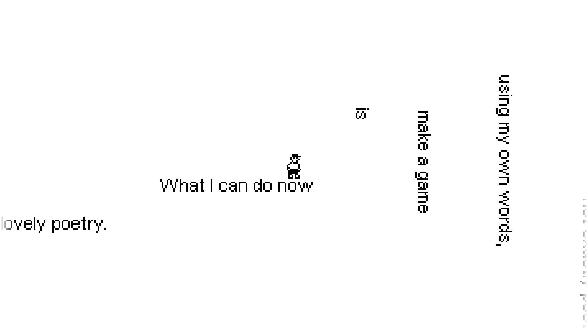

Research & Inspiration [Week 1-3]
click a note to open a larger notepad for reflections

Ghost in the Shell
cybernetic bodies, zero-interface, identity

click a note to open a larger notepad for reflections
cybernetic bodies, zero-interface, identity
